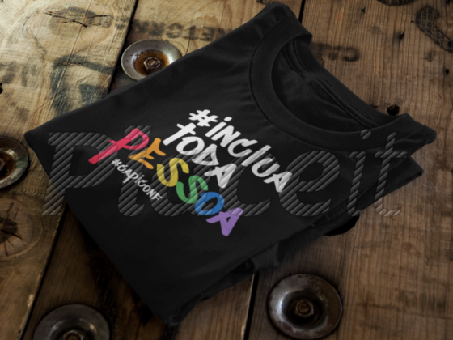
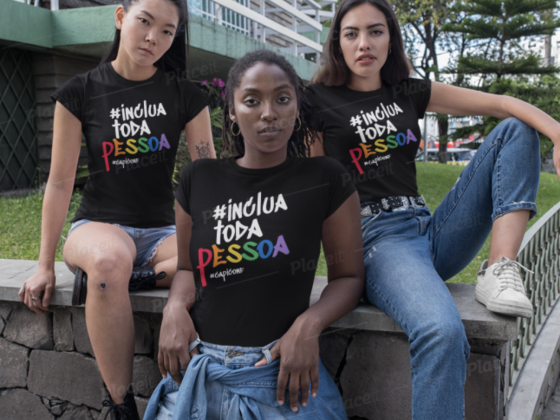

Não queremos apenas mais uma camiseta de evento!
Queremos uma causa para apoiar, algo maior que uma conferência de pessoas desenvolvedoras, algo maior que o
#CapiConf, algo que faça a diferença, que provoque, que faça você pensar, que faça você repensar, que faça
você se importar, se posicionar.
Toda pessoa deve ser incluída e reconhecida de forma igual.
De onde veio isso?
Desde o primeiro #CapiConf, nossas camisetas sempre fizeram sucesso, com mensagens bem humoradas sobre o
cotidiano do desenvolvimento de software, muitas pessoas, mesmo não vindo ao evento sempre perguntavam:
Como faço para ter uma?
A nossa resposta sempre foi:
Só estando presente no evento!
Desde então, nossas camisetas já rodaram o mundo, literalmente. Estiveram presentes no palco de uma das
maiores conferências de desenvolvedores do mundo, na plateia de eventos nacionais e internacionais, ou seja,
foram muito longe.
Com isso entendemos que uma camiseta alcançar servir para algo maior, pode levar uma grande mensagem, pode
realmente ajudar a semear um pensamento, um ideal, uma necessidade, uma causa.
Passamos a acreditar que dá sim, para mudar um pouco o mundo, uma camiseta de cada vez.
Então tomamos a decisão de vender a camiseta para quem não estiver no evento.
Legal, Gostei muito, quero uma! #ComoFaz?
Não vai ser só uma simples venda, então é legal você entender os detalhes, antes de comprar, são dois
modelos de aquisição:
Importante: Todo esse processo vai ser aberto, e você vai poder acompanhar ele de forma transparente aqui.

Pessoas Físicas
- Para cada camiseta que for adquirida nós vamos doar outra para uma instituição que apoia
causas que
consideramos importantíssimas como diversidade e inclusão.
- Toda pessoa que adquirir uma camiseta, vai ter o seu nome incluído neste site, como
apoiante;
- Ao comprar uma camiseta, você aceita e concorda com nosso código de conduta;
- Nos reservamos o direito de não aceitar compras de pessoas que não seguem ou concordem
com nosso código
de
conduta;
- As camisetas vão ser enviadas em até 10 dias após o término do evento.
Comprar e doar uma
camiseta

Pessoas Jurídicas
- Empresas e/ou organizações podem adquirir um lote de camisetas que será doado para as
pessoas presentes
no evento. Ao atingir o número superior ao de presentes no evento, doaremos a diferença
para uma
instituição que apoia causas que consideramos importantíssimas como diversidade e
inclusão;
- Toda empresas e/ou organização que adquirir uma camiseta, vai ter a sua logo incluída
neste site, como
apoiante;
- Ao comprar um lote de camisetas, as empresas e/ou organizações aceitam e concordam com
nosso código de
conduta;
- Nos reservamos o direito de não aceitar contribuições de empresas que não seguem ou
concordem com nosso
código de conduta;
- As camisetas vão ser enviadas em até 10 dias após o término do evento.
Doar um lote de
camisetas
Quem apoia este manifesto?
Pessoas
Essas são as pessoas que entendem que devemos incluir todas as pessoas:
TBA!
Empresas e/ou Organizações
Essas são as empresas que entendem que devemos incluir todas as pessoas:
TBA!